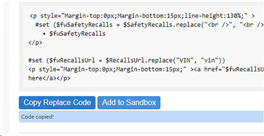

BECS
An internal-use tool created to share valuable snippets that are useful in production. BECS is an acronym which stands for Beyond Email Code Snippets. As developers, we often rely on our own libraries of code snippets for regular tasks. BECS serves as a resource for less common snippets that address occasional problems.
It was created for internal use to share valuable snippets that are useful in production. This resource helps streamline the development process by providing quick access to pre-vetted, tested, and reusable code. It is intended for team members to share and reference.
This centralized repository not only saves time but also enhances the overall quality of the codebase by leveraging the collective knowledge and experience of the team.

A view of the full-page BECS interface. On the left side, there is a navigation panel for easy access to different elements. The main screen functions as a code repository, where all the code snippets are stored and organized. The application design is straightforward and functional, focusing on utility rather than aesthetics.
There is a self explanatory 'Copy Code' button as well as a 'Add to Sandbox' button which adds the code to an editable sandbox at the bottom. Here multiple snippets of code can be saved and edited.
The sandbox environment located at the bottom of the page is isolated from the main snippets. This editable code sandbox allows developers to edit that code, or the multiple code snippets, added to the sandbox making it easier and more efficient.
Responsive design elements ensures usability across various devices and screen sizes. Allowing the dev to dock BECS which can make the application not only functional but also more user-friendly.
